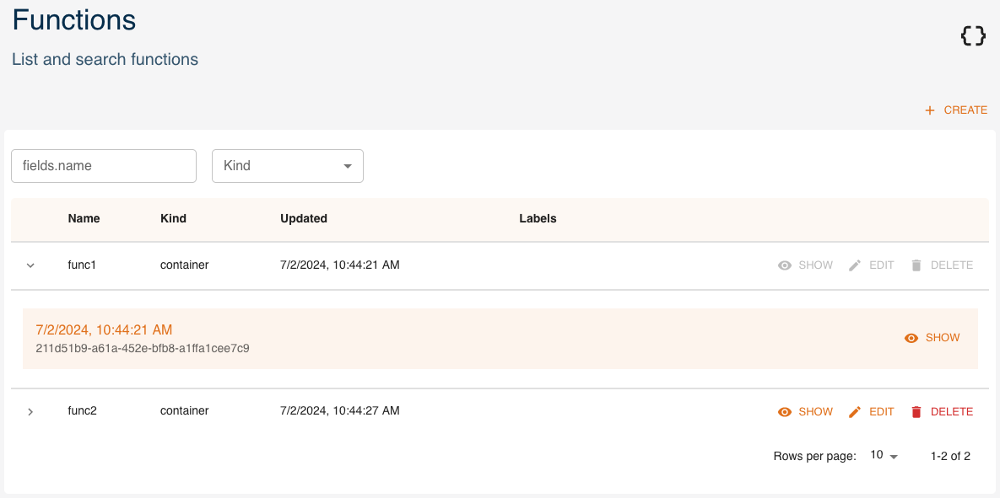
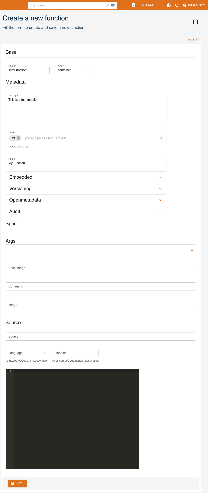
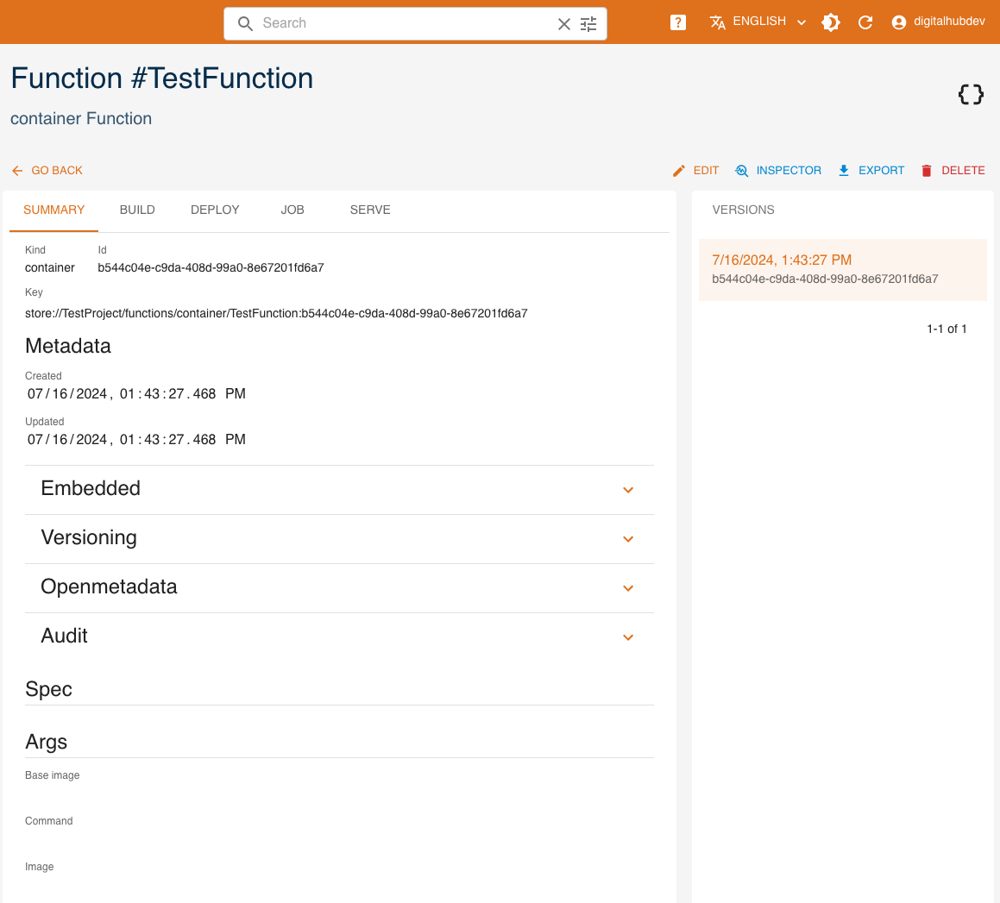
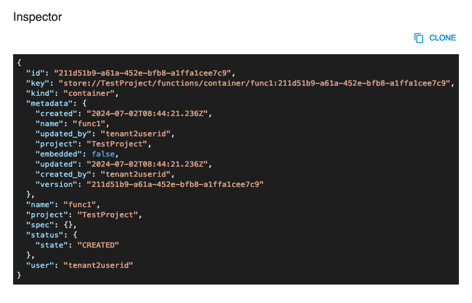
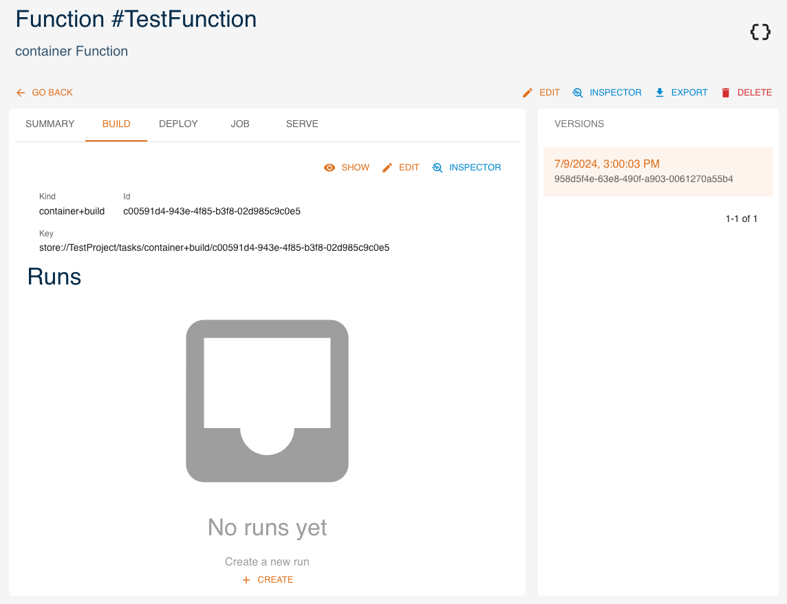
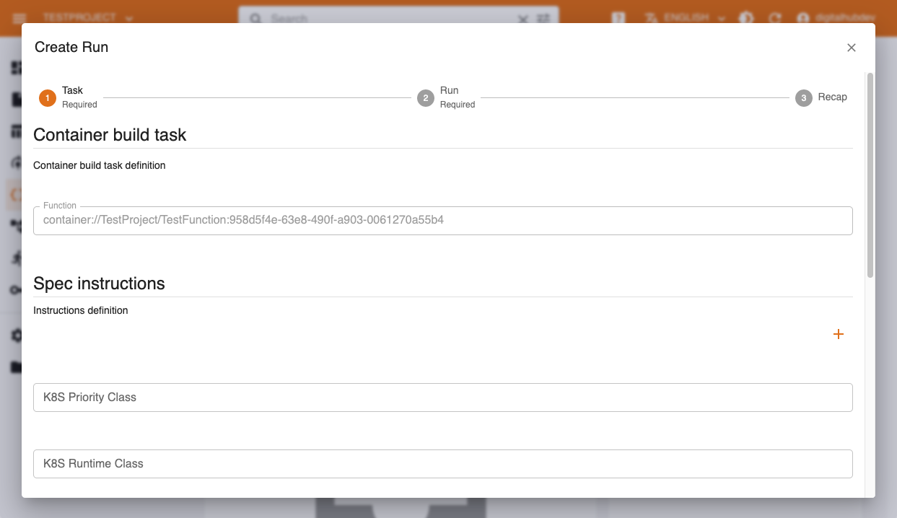
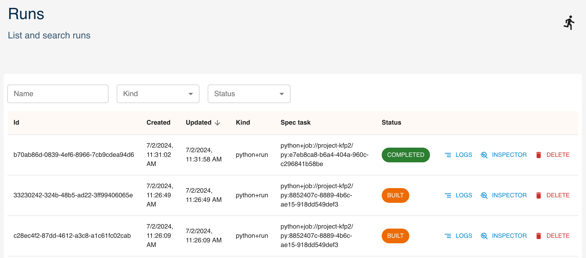
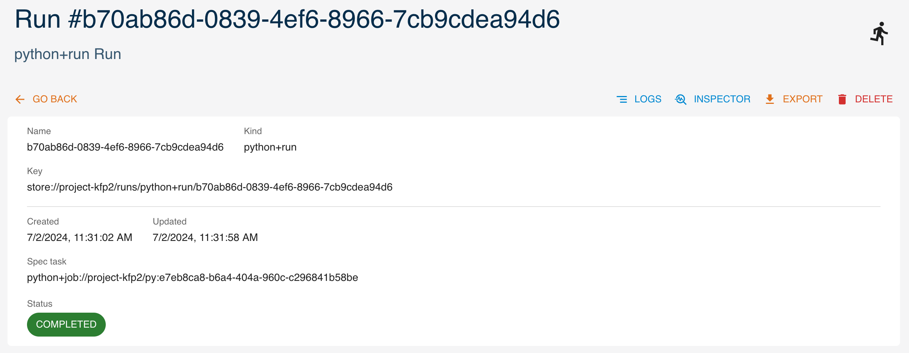
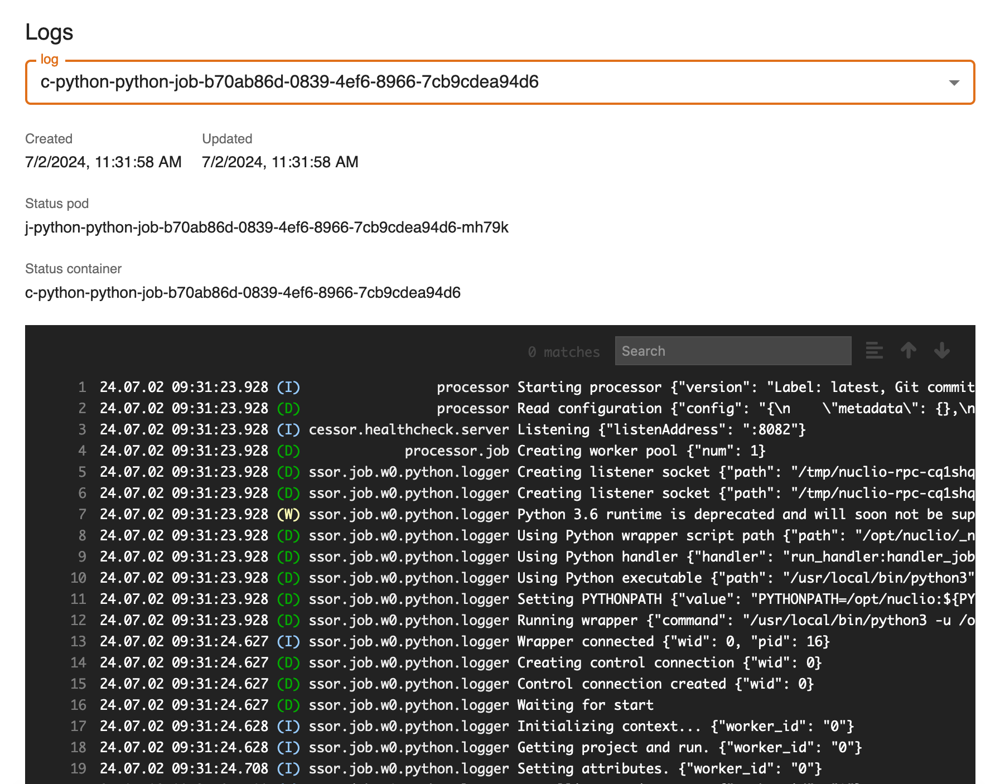

Functions and Runtimes
Functions are the logical description of something that the platform may execute and track for you. A function may represent code to run as a job, an ML model inference to be used as batch procedure or as a service, a data validation, etc.
In the platform we perform actions over functions (also referred to as "tasks"), such as job execution, deploy, container image build. A single action execution is called run, and the platform keeps track of these runs, with metadata about function version, operation parameters, and runtime parameters for a single execution.
They are associated with a given runtime, which implements the actual execution and determines which actions are available. Examples are DBT, Nefertem, Python, etc. Runtimes are highly specialized components which can translate the representation of a given execution, as expressed in the run, into an actual execution operation performed via libraries, code, external tools etc.
Runtimes define the key point of extension of the platform: new runtimes may be added in order to implement the low-level logic of "translating" the high level operation definition into an executable run. For example, DBT runtime allows for defining the transformation as a task that, given the input table reference, produces a datastt appyling the function defined as SQL code. The runtime in this case is responsible for converting the specification and the references to a dedicated Kubernetes Job that runs DBT transformation and stores the corresponding dataset.
The set of the supported runtimes is documented in Runtimes References section. Independently of the specific runtime implementation, the flow of actions with respect to the function definition and execution is the following:
- define a new function providing its name, runtime, definition (e.g., source code), and configuration (e.g., dependencies). The function definition is saved by the project. Each change to the function spec creates a new function version so that the executions of different function versions are independently tracked.
- execute a task over the function providing the configuration of the task (e.g., the K8S resources needed for the execution), the execution parameters and inputs (if any). This creates a new task specification and a new run instance tracked by the platform.
The definition and execution of the functions may be performed either via UI or via Python SDK.
Management via UI
Functions
Functions can be created and managed as entities from the console. You can access them from the dashboard or the left menu. You can:
createa new functionexpanda function to see its 5 latest versionsshowthe details of a functionedita functiondeletea functionfilterfunctions by name and kind

Here we analyze how to create, read, update and delete functions using the UI, similarly to what can be done through the SDK.
Create
Click CREATE and a form will be shown:

Mandatory fields are:
Name: name and identifier of the functionKind: kind of function
Metadata fields are optional and may be updated later.
Description: a human-readable descriptionLabels: list of labelsName: name of the functionEmbedded: flag for embedded metadataVersioning: version of the functionOpenmetadata: flag to publish metadataAudit: author of creation and modification
Spec fields will change depending on the function's kind.
Read
Click SHOW to view a function's details.

Tabs next to SUMMARY will change depending on the function's kind. Some of them allow you to create runs, but we will see this in a later section.
On the right side, all versions of the resource are listed, with the current one highlighted. By clicking a different version, values displayed will change accordingly.
The INSPECTOR button will show a dialog containing the resource in JSON format.

The EXPORT button will download the resource's information as a yaml file.
Update
You can update a function by clicking EDIT. Greyed-out fields may not be updated.
Delete
You can delete a function from either its detail page or the list of functions, by clicking DELETE.
Runs
Create
A run represents the execution of a task through a function. As such, the starting point to create a run is the function it is based on. Select one of the functions you created. You will notice multiple tabs at the top, next to SUMMARY. These tabs may differ depending on the function's kind.

Click CREATE to create a new run. You will start a 3-steps process to create a run.
The first step will ask for parameters that depend on the function's kind and the task you are creating the run for, but will generally also ask if you wish to configure resources to allocate, environment variables, secrets, volumes and node modules.
The second step will ask, if applicable, to specify inputs, outputs and parameters.
The third step will simply present a recap.

View and manage
By going through a function's tabs, you can access the corresponding runs, but you may also access all runs from the Runs section in the left menu (also available as Jobs and runs in the dashboard).
You can filter runs by name, kind and status.

Click on a run to view its details.

From here, click on LOGS to view its logs.

Management via SDK
In the following sections, we will see how to create, read, update and delete functions and what can be done with the Function object through the SDK, including how to create Run objects.
You can manage the Function entity with the following methods:
new_function: create a new functionget_function: get a functionupdate_function: update a functiondelete_function: delete a functionlist_functions: list all functions
This can be done through the SDK, or through the Project object.
Example:
import digitalhub as dh
project = dh.get_or_create_project("my-project")
## From library
function = dh.new_function(project="my-project",
name="my-function",
kind="function-kind",
**kwargs)
## From project
function = project.new_function(name="my-function",
kind="function-kind",
**kwargs)
Create
To create a function you can use the new_function() method.
Mandatory parameters are:
project: the project in which the function will be createdname: name of the functionkind: kind of the function
Optional parameters are:
uuid: the uuid of the function (this is automatically generated if not provided). If provided, must be a valid uuid v4.description: description of the functionlabels: labels for the functiongit_source: remote source of the functionkwargs: keyword arguments passed to the spec constructor
Example:
function = dh.new_function(project="my-project",
name="my-function",
kind="function-kind",
**kwargs)
Read
To read a function you can use the get_function() or import_function() methods. The first one searches for the function in the back-end, the second one loads it from a local yaml file.
Get
Mandatory parameters are:
project: the project in which the function will be created
Optional parameters are:
entity_name: to use the name of the function as identifier. It returns the latest version of the function.entity_id: to use the uuid of the function as identifier. It returns the specified version of the function.kwargs: keyword arguments passed to the client that communicates with the back-end
Examples:
function = dh.get_function(project="my-project",
entity_name="my-function")
function = dh.get_function(project="my-project",
entity_id="uuid-of-my-function")
Import
Mandatory parameters are:
file: file path to the function yaml
Example:
function = dh.import_function(file="my-function.yaml")
Update
To update a function, use the update_function() method.
Mandatory parameters are:
function: the function object to update
Optional parameters are:
kwargs: keyword arguments passed to the client that communicates with the back-end
Example:
function = dh.update_function(function=function,
**kwargs)
Delete
To delete a function, use the delete_function() method.
Mandatory parameters are:
project: the project in which the function will be created
Optional parameters are:
entity_name: to use the name of the function as identifierentity_id: to use the uuid of the function as identifier. Mutually exclusive withdelete_all_versions.delete_all_versions: ifTrue, all versions of the function will be deleted. Mutually exclusive withentity_id.cascade: ifTrue, allTaskandRunobjects associated with the function will be deletedkwargs: keyword arguments passed to the client that communicates with the back-end
Example:
function = dh.delete_function(project="my-project",
entity_name="my-function")
List
To list all functions, use the list_functions() method.
Mandatory parameters are:
project: the project in which the function will be created
Optional parameters are:
kwargs: keyword arguments passed to the client that communicates with the back-end
Example:
functions = dh.list_functions(project="my-project")
Function object
The Function object represents an executable function. The object exposes methods for saving and exporting the entity function into backend or locally as yaml and to execute it.
Save
To save a function in the back-end, use the save() method.
The method accepts the following optional parameters:
update: a boolean value, ifTruethe function will be updated on the back-end
Example:
function.save()
Export
To export a function as yaml, use the export() method.
The method accepts the following optional parameters:
filename: the name of the file to export
Example:
function.export(filename="my-function.yaml")
Run
To run a function, use the run() method. This method is a shortcut for:
- creating a
Taskobject - creating a
Runobject - executing the
Runobject
The method accepts the following mandatory parameters:
action: the action to be executed. Possible values for this parameter depend on thekindof the function. See the runtimes section for more information.
The optional task parameters are as follows. For Kubernetes:
node_selector: a list of node selectors. The runtime will select the nodes to which the task will be scheduled.volumes: a list of volumesresources: a map of resources (CPU, memory, GPU)affinity: node affinitytolerations: tolerationsenv: environment variables to inject into the containersecrets: list of secrets to inject into the containerbackoff_limit: number of retries when a job fails.schedule: schedule of the job as a cron expressionreplicas: number of replicas of the deployment
For runtime-specific task parameters, see the runtime documentation.
The optional run parameters are:
inputs: a map of inputsoutputs: a map of outputsparameters: a map of parametersvalues: a list of valueslocal_execution: ifTrue, the function will be executed locally
Example:
run = function.run(
action="job",
inputs={"input-param": "input-value"},
outputs={"output-param": "output-value"}
)